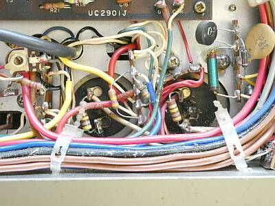
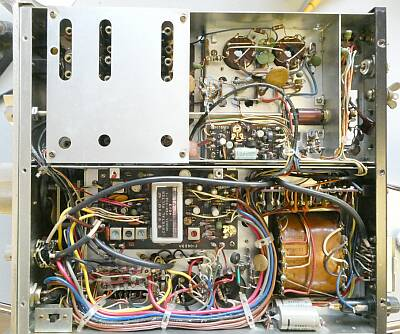
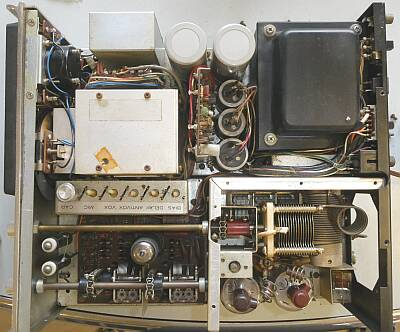
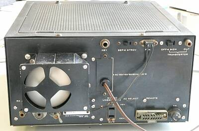
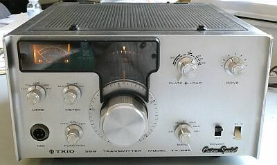
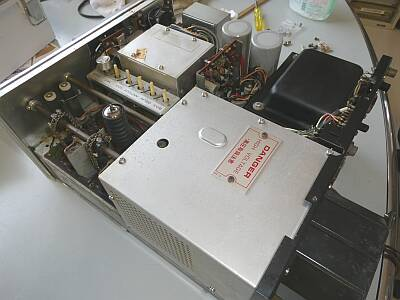
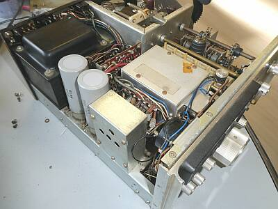
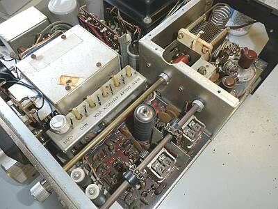
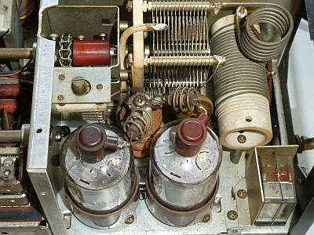
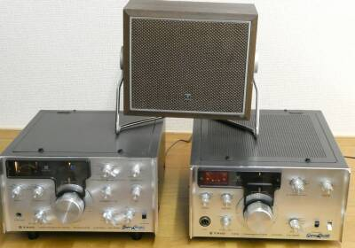

 |
やはり高圧整流回路の平滑コンデンサに問題が生じています
電解コンデンサ二つとも中央部が破裂しています
底板に噴き出した電解液が固着していました
今回は横着をして、高圧電圧トランスの端子で配線を外し、見た目だけの登場としました
|
 |
こちらが、下（底面）の様子です
底板を取り外したところです
シールド板に囲われていてるところはＲＦ部・・・局発、第２ミキサー、ドライバーです
その右（後ろ）はファイナル部です
ＴＲＩＯお決まりの、松下Ｓ２００１ｘ２本です
そして、増幅型ＡＬＣの採用です
|
 |
こちらが上面の様子
ケースを取り外したところです
左上シールド キャリア発振部
その下は、ＶＦＯ部
やはり電源の占める比率が高いですね
強制空冷ファンは、取り外してお掃除中です |
 |
こちらはリアパネル
強制空冷ファンを装備（通電中：回っています）
受信機、あるいはトランスバータの接続が考慮されています
セパレート、トランシーブのＶＦＯ切替ＳＷもあります |
 |
特に何もコメントのないフロントパネルです
モード切替
メーター切替
ファンクション（通常、キャリブレーション、ＶＯＸ）切替
バンド切替
プレート／ロードは、1軸二重
ドライブ調整
電源ＳＷ
送信ＳＷ
|
 |
周波数表示ダイヤル
裏からのＰＬの光を遮るシールが、はがれかかっていましたので補修しました |
 |
できる清掃を行いました |
 |
ドライブ、ロードＶＣ
いずれもチェーン駆動です
前オーナーの手でツマミが取付られている半固定ＶＲは、ＡＭキャリアレベル調整ＶＲです
その様子から、本機の登場当時は、結構ＡＭ需要があったものと想像されます |
 |
ファイナル部
強制空冷ファンは、取り外してお掃除中
切り替えリレーには、シールドが立っています
|
 |
見た目の状態は、ＪＲ／ＳＰを含め年相応
今回（ＴＸ-５９９）は、実際に使う気がない点もあって、清掃＋までで、実運用が出来るところまでの面倒は見ていません
中圧、高圧電源出力が出ないように、電源トランスの端子のところで配線を外しています |
|